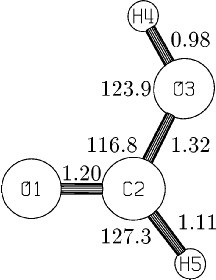

Next: Memory Considerations Up: Conversion Between Various Previous: Conversion Between Various


Next: Memory Considerations Up: Conversion Between Various Previous: Conversion Between Various
The data set for formic acid is given in the Figure.
Figure:
Data set for Formic acid
MINDO/3Formic acid Example of normal geometry definition O C 1.20 1 O 1.32 1 116.8 1 0.0 0 2 1 H 0.98 1 123.9 1 0.0 0 3 2 1 H 1.11 1 127.3 1 180.0 0 2 1 3 0 0.00 0 0.0 0 0.0 0 0 0 0
 |
The geometry in this data-set can be understood as follows: Atom 1, an oxygen, is at the origin of internal coordinate space, and has coordinates (0,0,0). Atom 2, a carbon, is positioned at coordinate (1.20,0,0), that is, it is related to the oxygen by a bond-length of 1.20 Ångstroms, and to atom 3, an oxygen, by a bond-length of 1.32 Ångstroms. The O-C-O angle is 116.8 degrees. The first hydrogen is bonded to the hydroxyl oxygen and the second hydrogen is bonded to the carbon atom. The H-C-O-O dihedral angle is 180 degrees.